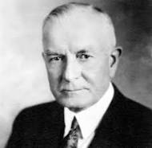

Thomas J. Watson Sr. was an American businessman, best known as the founder of IBM. He was born in 1874 in Troy, New York. He was the son of a farmer and a school teacher. He attended the Troy High School and then went to Rensselaer Polytechnic Institute, where he studied mechanical engineering. He graduated in 1896 and then worked at the National Cash Register Company for 13 years. In 1901, he founded the Computing Tabulating Recording Company (CTR), which was later renamed to International Business Machines Corporation (IBM).
| Year | Event |
|---|---|
| 1874 | He was born in Troy, New York. |
| 1896 | He graduated from Rensselaer Polytechnic Institute. |
| 1901 | He founded the Computing Tabulating Recording Company (CTR). |